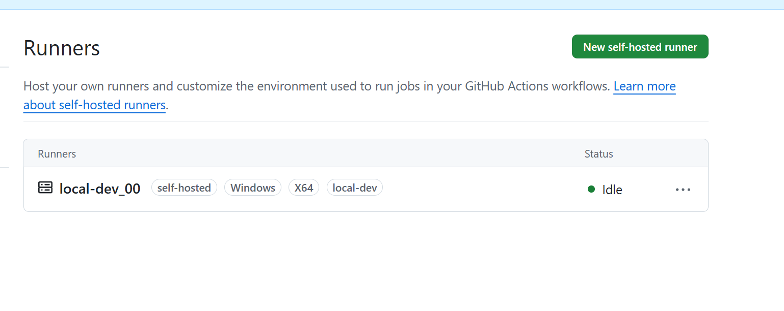
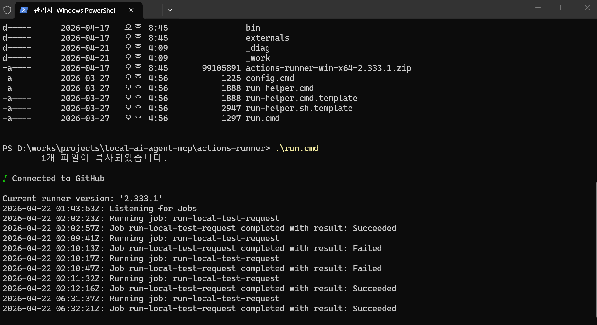

Self-hosted Runner
References
- GitHub-hosted runners
https://docs.github.com/en/actions/reference/runners/github-hosted-runners - Self-hosted runners
https://docs.github.com/en/actions/reference/runners/self-hosted-runners
Overview
This document explains the relationship between Target Runner and a GitHub self-hosted runner.
Key points:
Target Runneris the logical execution owner for a TEST request- the execution owner can be a GitHub Actions
self-hosted runner, a remote worker, a lab node, or a dedicated test machine - in this repository,
Target Runneris used as a broader routing name - when possible, align
Target Runnerwith the GitHub runner label
Interpretation:
- document view
Target Runner= execution node responsible for the TEST request- GitHub Actions view
self-hosted runner= execution node that receives the job from GitHub
Quick Start
- Open
Settings > Actions > Runnersin the GitHub repository. - Select
New self-hosted runner. - Choose the runner image and architecture.
- Run
config.cmdand complete registration. - Use
runs-onwithself-hostedand the project label.
Recommended mapping for this repository:
Target Runner:local-dev- runner label:
local-dev

Connected to GitHub
Current runner version: '2.333.1'
2026-04-20 05:30:21Z: Listening for Jobs
Recommended Naming
The simplest rule is to use the same value for the GitHub runner label and the TEST request Target Runner.
Example:
- local machine role:
local-dev - GitHub runner label:
local-dev - TEST request
Target Runner:local-dev
Benefits:
- easier Issue routing
- easier Actions routing
- less naming ambiguity
Connect My PC
1. Prepare Runner Directory
This document assumes the runner workspace is placed inside the repository root.
cd D:\works\projects\local-ai-agent-mcp
mkdir action-runner
cd .\action-runner
Reasons:
- easier local path management
- repository path and runner path stay aligned
- simpler explanation for logs and scripts
Notes:
action-runneris usually not tracked by Git- add it to
.gitignoreif needed
2. Get Registration Commands from GitHub
Repository path:
SettingsActionsRunnersNew self-hosted runner
Runner release reference:
3. Set Runner Name and Labels
During config.cmd, GitHub asks for:
- runner group
- runner name
- labels
- service installation choice
| Target Runner | Meaning |
|---|---|
local-dev_00 |
developer-managed local execution environment |
qemu-runner |
emulator-based test environment |
lab-node-01 |
hardware lab node |
windows-hw-01 |
Windows hardware test node |
Administrator privileges are recommended.
--------------------------------------------------------------------------------
| ____ _ _ _ _ _ _ _ _ |
| / ___(_) |_| | | |_ _| |__ / \ ___| |_(_) ___ _ __ ___ |
| | | _| | __| |_| | | | | '_ \ / _ \ / __| __| |/ _ \| '_ \/ __| |
| | |_| | | |_| _ | |_| | |_) | / ___ \ (__| |_| | (_) | | | \__ \ |
| \____|_|\__|_| |_|\__,_|_.__/ /_/ \_\___|\__|_|\___/|_| |_|___/ |
| |
| Self-hosted runner registration |
| |
--------------------------------------------------------------------------------
# Authentication
Connected to GitHub
# Runner Registration
Enter the name of the runner group to add this runner to: [press Enter for Default]
Enter the name of runner: [press Enter for JHLEE] local-dev_00
This runner will have the following labels: 'self-hosted', 'Windows', 'X64'
Enter any additional labels (ex. label-1,label-2): [press Enter to skip] local-dev
Runner successfully added
# Runner settings
Enter name of work folder: [press Enter for _work]
Settings Saved.
Would you like to run the runner as service? (Y/N) [press Enter for N]
Example:
runner name: my-pc
labels: self-hosted, Windows, X64, local-dev
The important part is adding a project-specific label such as local-dev.
4. Choose How to Run It
For a quick check, run it directly from the action-runner directory:
.\run.cmd

To keep it available after reboot, install it as a service:
.\svc install
.\svc start
Running as a service keeps the runner available after logout.
5. Verify Runner Status in GitHub
After registration, the runner should appear as Idle or Online in Settings > Actions > Runners.
If not, check:
- firewall or proxy restrictions
- expired registration token
- whether
run.cmdor the service is actually running - whether the label matches the expected value
Workflow Mapping
Registering a runner is not enough. A workflow must explicitly target that runner.
Example:
jobs:
test-on-local-dev:
runs-on: [self-hosted, local-dev]
steps:
- uses: actions/checkout@v4
- name: Show runner
run: echo "running on self-hosted local-dev"
runs-on: [self-hosted, local-dev] means GitHub selects only a runner that has both labels.
Current Repository Status
Current repository workflows:
.github/workflows/github_pages.yaml.github/workflows/test_request_local.yaml
Current TEST automation path:
test_request_local.yamluses a self-hosted runner- current label expectation is
local-dev
Issue-Based Flow
GitHub Issue
-> resolve Target Runner
-> selected Runner or Worker processes the request
-> Local MCP tool execution
-> logs + result.json
-> GitHub Issue comment
In this model, Target Runner is not just metadata. It is an execution ownership and routing key.
Mapping Strategy
Recommended mapping:
- Issue
Target Runner:local-dev - GitHub Actions self-hosted runner label:
local-dev
This keeps human routing and workflow routing aligned.
Multiple Runners
Target Runner can be a single value or a comma-separated candidate list.
Recommended rules:
- use a single runner by default
- use a comma-separated list only when needed
- interpret multiple values as
OR
Example:
Target Runner: qemu-runner, lab-node-01
Meaning:
- either
qemu-runnerorlab-node-01may process the request - the first claimer handles it
Ownership Rules
When multiple runners exist, the minimum coordination rules are:
- Each TEST request must declare
Target Runner. - Each runner should pick only executable requests.
- Claim the request with an assignee or label when work starts.
- Record completion with labels such as
test-doneortest-failed.
Suggested labels:
test-requesttest-runningtest-donetest-failed
Relationship with MCP
A self-hosted runner is not the same thing as an MCP Server.
Roles:
- Runner or Worker
- execution environment for the TEST request
- Local MCP Server
- tool interface exposed in the execution environment
- GitHub MCP Server
- interface for Issue, comment, and status operations on GitHub
Practical flow:
GitHub Issue
-> Runner or Worker
-> request inspection through GitHub integration
-> Local MCP Server tool execution
-> result generation
-> result reporting back to GitHub
Recommended Position
In this repository, the safest interpretation is:
- now
Target Runneris a logical execution node name- later
- it can map 1:1 to a GitHub Actions self-hosted runner label
For a local machine, a stable label such as local-dev is the simplest operating model.